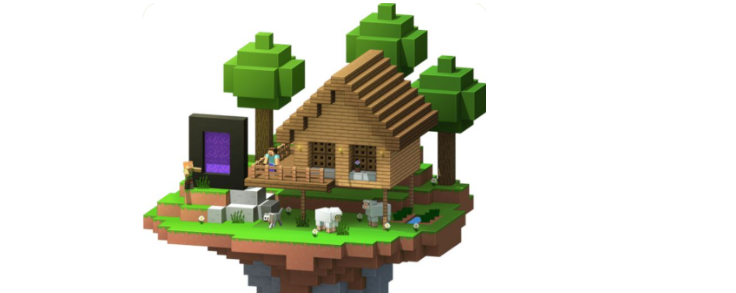
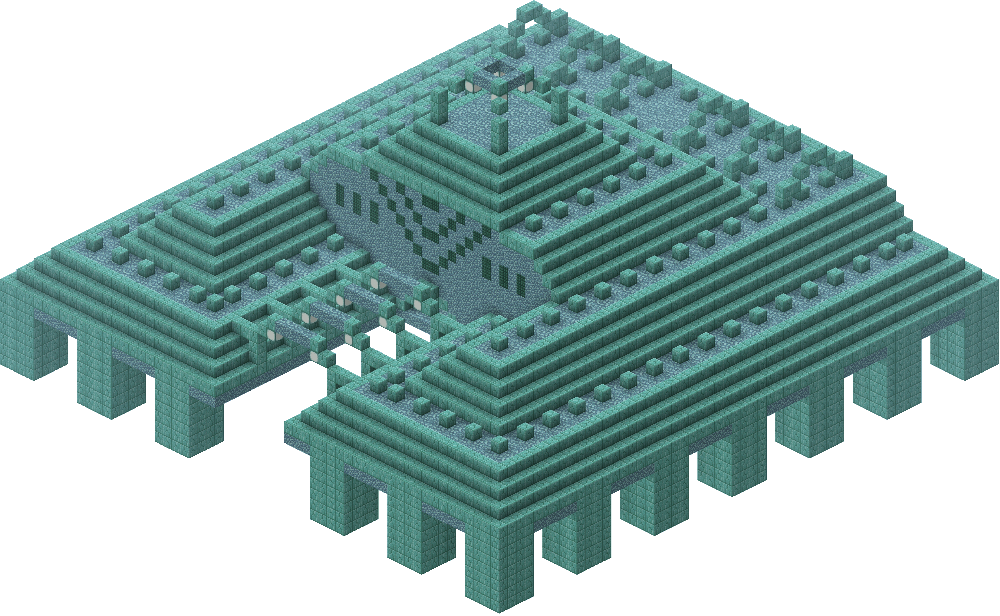
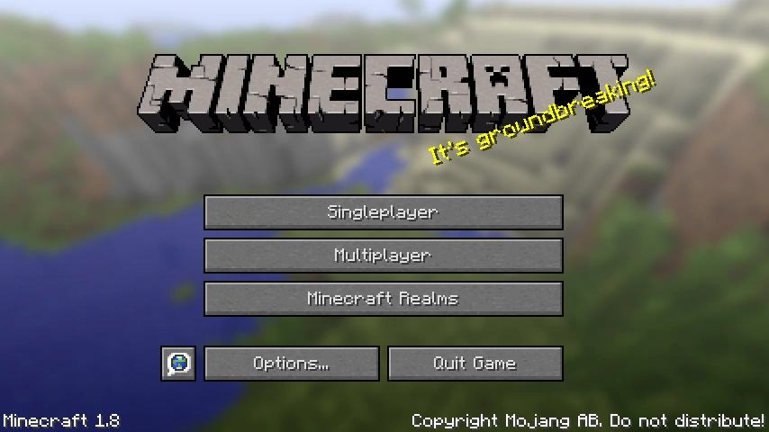

One of Minecraft’s biggest updates is 1.8, otherwise known as “The Bountiful Update”, released
on September 2,
2014. It introduced numerous new features, blocks, and items that significantly impacted gameplay.
Among the new blocks were prismarine, prismarine bricks, dark prismarine, and sea
lanterns. These blocks could be
found in the new ocean monument structures, along with common blocks such as granite, diorite,
and andesite. These
additions provided new decorative and building materials. The update also introduced slime blocks, which
became a
significant part of Redstone engineering by allowing the creation of complex machines.
Click and Drag to see more....



New mobs such as the Endermite and Guardians, brought a fresh challenge to the game.
Endermite
spawn when an Ender Pearl is used, while Guardians and Elder Guardians are found in the newly
introduced
ocean monuments. Additionally, the enchanting system was revamped to include lapis lazuli.
Furthermore, anvil mechanics were adjusted for repair costs and combining enchantments. The villager
trading system was also changed, adding more possible trades. Spectator Mode was introduced, allowing players to
observe
the world without interacting with it, and new commands were also added.